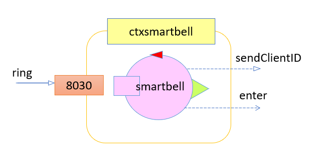

Requirements
Goal - Tearoom COVID-19
The tearoom is a rectangular room that includes:
- an entrancedoor to enter in the room and an exitdoor to exit form it;
- a number N (N=2) of teatable;
- a servicearea including a servicedesk at which works a barman;
- a hall equipped with a presencedetector, i.e. a device (e.g. a sonar) that can detect the presence of a person (or some other entity) in it.

User stories
- I intend to notify my interest in entering in a safe tearoom, sitting at a free teatable, ordering some tea, consuming it (within a limited amount of time maxstaytime) paying the service with my credit card and finally leaving the room.
- For safe tearoom, I intend a tearoom with clean tea-tables posed at a proper distance; the room is populated by human clients whose body temperature is less than 37.5 degrees.
- I can submit my notification of interest by hitting the smartbell located near the entrancedoor that will automatically measure my body temperature and send a request message to the waiter, by giving to me an unique clientidentifier.
- I my body temperature is ok, but my request cannot be immediately satisfied (since the room is full), I will be informed by the waiter aabout the maximum waiting time.
- I intend to be able to see the current state of the tearoom by using a browser connected to a web-server associated to the application.
Requirements
- accept the request of a client to enter in the tearoom if there is at least one teatable in the state tableclean, i.e. the table is free and has been properly cleaned;
- inform the client about the maximum waiting time if there is no table free and clean;
- reach the entrance door and convoy the accepted client to the selected teatable;
- take the order of the client and transmit it (using a wifi-device) to the barman;
- serve the client when the barman says that the requested drink is ready;
- collect the payment from the client when he/she has finished to consume or when the maxstaytime is expired;
- convoy the client to the exitdoor;
- clean the tea-table just freed by the client;
- rest at my home when there is nothing to do.
Assumptions for Sprint 1
- assumption 1 : there will be only one customer in the tearoom at a time
- assumption 2 : task will be handled in order of arrival (no priority policy)
- assumption 3 : Manager's web page won't be developed for now
Requirement analysis
Names and Verbs analysis
Tearoom
Rectangular room that is composed of two main parts: the safe tearoom and the hall.- Safe tearoom : it is the actual tearoom. Any customer can enter it only if he/she has a body temperature that is less than 37.5°. It is composed of:
- Teatable : physical objects where clients consumes their orders. The tables are at a proper distance (following COVID-19 restrictions) and need to be cleaned by the waiter before any usage
- Service area : it is composed of the service desk, at which works a barman, and the home, where the waiter stays when it hasn't any task to performe. The service desk is where the waiter will withdraw the orders that are to be brought to the customers;
- Exit and entrance door : access and exit points that connect the hall and the safe tearoom;
- Hall : passageway where the custumers wait to enter the safe tearoom. After a first meeting with the client it was made clear that only one customer at a time can stay in the hall. It also has:
- Smartbell : device located near the entrance door that any customer must use to ask the permession to enter. When hit, the smartbell measure the customer's body temperature and, only if it is less that 37.5°, it gives the customer a clientidentifier and sends a message to the waiter to ask for the aforementioned permission;
- Presence dectector : device that is able to dectect the presence of a person;
Manager
The manager is one of the system users. It intends to access the current state of our system through a web view using a browser connected to a web-server associated to the application. The current state is composed of:- Teatables states: it stores information about the presence of a customer at a table and if the table is clean or not;
- Hall state: it stores information about the presence of a customer in the hall;
- Waiter state: it stores information about the task that the waiter is currently performing;
- Barman state: it stores information about the task that the barman is currently performing;
Client
A client is one of our system users and is a tearoom customer. When inside our system every client has a unique identifier clientidentifier: a string that will uniquely identify that client inside the system.Barman
The barman is an external entity that is in charge of preparing orders and interacts with our system.Waiter
It is the DDR robot (Differential Drive Robot - robot that is able to receive command and communicate with many other different devices to complete its tasks) that regulates the access to the tearoom and it is this project main object of study. It performs the following operations:- Accept the request of a client: it receives a
enter message from the smartbell notifying a client's interest in entering the safe tearoom. It accepts that request only if there is at least one teatable that is properly clean and free. Accepting a client means that the chosen table will be reserved for client who sent the message - Reach the entrance door: after accepting the client, the waiter moves from its current position to the entrance door where the client is waiting;
- Convoy the client to the table: the waiter moves from the entrance door to the client reserved teatable, while convoying the client to that teatable;
- Inform the client about the maximum waiting time: if no teatable is available (no teatable is properly cleaned and free) at
enter message reception, the waiter sends await message to the client, containing the maximum time it will have to wait (calculated considering the number of clients that are currently in the safe-tearoom, N, and maxstaytime: N*maxstaytime) - Take the order: the client will communicate its order to the waiter that will then send it as a
order message (using a Wifi device) to the barman. Hence, it won't move from the client's table to deliver the order to the barman; - Serve the client: when client's order is ready the waiter receives a
ready message from the barman. As a consequence, it will move from its current position to the service desk in the service area, withdraw the tea, and bring it to the client moving from service desk to client's teatable; - Collect the payment: when maxstaytime expires or the client has finshed its consumption, the waiter receives a
payment message. As a consequence, it will move from its current position to the client-sender teatable and withdraw the money; After a first meeting with the client it was made clear that maxstaytime must consider the time that elapses between when the customer sit and when the customer order, and the time that passes between when the customer receive the drink and ask to pay and leave. Which means that customer's time expires if orderingTime + consumptionTime > maxstaytime. - Convoy the client to the exit door: immediately after payment, the waiter moves from the client's teatable to the exit door while convoying the client that wants to exit the tearoom;
- Clean the teatable: after the client has left the teatable it cannot be used until it is cleaned. To clean a teatable the waiter must move from its current position to that teatable and perform the cleaning action. The cleaning action of that teatable takes a limited amount of time in which the waiter keeps listening for incoming messages from clients or barman (this is required because the waiter still has to answer
enter messages and should reduce as much as possible the waiting time of the requests coming from each client, which means in some scenarios it may be desirable to suspend the cleaning task in favor of new tasks); - Rest at home: if the waiter has no more incoming messages in its queue (tasks to complete), it moves from its current position to the home in the service area. It won't move, but it will keep listening for incoming messages on its queue, ready to take on new tasks.
- Safe tearoom : it is the actual tearoom. Any customer can enter it only if he/she has a body temperature that is less than 37.5°. It is composed of:
Use cases and scenarios
Client
UC-ID Ring Actors The client that wants to enter the system Description As a client I want to enter the safe tearoom, sitting at a free teatable, ordering some tea and consuming it. Preconditions The client entered the Tearoom Hall and is near the entrance door and hit the smartbell Activity The smartbell measure client's body temperature. If it is under 37.5° the smartbell creates a clientidentifier and givis it to the client. After that, the smartbell sends a enter message to the waiter to notify client's interest in entering the safe tearoom.Postconditions If client's temperature is under 37.5°, it receives a client identifier from the smartbell, otherwise it leaves the room. If the client cannot enter the safe tearoom because there is no free and clean tables, it receives a wait message from the waiter containg the maximum time it will have to wait maxwaittime, otherwise it starts waiting for the waiter.UC-ID EnterAndSit Actors The client that wants to reach the table in the safe tearoom Description As a client I want to be convoyed to a teatable in the safe tearoom by the waiter. Preconditions The waiter reached the entrance door and communicated its intention of convoying the client that owns a the client's clientidentifier (the client we are analysing). Activity The robot convoys the client from the entrance door to the teatable. Postconditions The teatable is reserved for that client and the client is sit down and orderd its consuption(?). UC-ID Order Actors The client already in the safe tearoom. Description As a client, I want to order a tea. Preconditions The client sits at a teatable and wants to order, so it sends a tea message to the waiter to specify which tea it would like to have.Activity The waiter receives the client's order and then sends a order message to the barman containg the order.Postconditions The barman starts preparing the tea. The waiter waits for the order to be ready, but can assolve some other tasks in the meantime. UC-ID PayAndLeave Actors The client that wants to pay for its consumption and leave. Description As a client I need to pay for my consumption at the teatable (for COVID-19 restrictions) and then I need the waiter to convoy me at the exit door. Preconditions The client sent a pay message to the waiter because it endend its consumption or it exceeded its maximum time maxstaytime.Hence, the waiter reached the client's teatable.Activity The client pays and the waiter covoys it to the exit door moving from client's teatable to the exit door. Postconditions The client left the safe tearoom and, therefore, left our system. Barman
UC-ID ReadyOrder Actors The barman that finished preparing the order. Description As a barman I need the waiter to take the ready order and bring it to the right teatable. Preconditions As a barman, I received an order message and I prepared it, hence the order is ready and I sent aready message to the waiter.Activity The waiter moves from its current position to the service desk in the service area and takes the order, then it moves from the service desk to the right teatable. Postconditions The order is deliverd to the client at the right teatable. Manager
UC-ID ViewState Actors The mager that intends to see the Tearoom state. Description As a manager I want to access a web view (through a browser) that shows me the Tearoom current state. Preconditions The manager, sent a request for the web-view page through a browser. Activity The system shows the current state to the manager and updates it real-time until the manager closes the web-view. Postconditions The manager can see the current state displayed in the web-view. Model of the requirements
As analysts with a model of the requirements we want to achieve two main goals:- we want to highligh essential aspects of the system using a formal and explicit language. By doing so we remove possible ambiguity and misunderstands while also focus our attention solely on important aspects of the system.
- we want an executable model, so that it is possible to show it to the customer to verify that everything is going as expected and to eventually allow him to better understand what he wants from our system
Qak Smartbell model
 System smartbellRequest ring : ring(ARG)Reply sendClientID : sendClientID(CLIENT_ID)Dispatch enter : enter(CLIENT_ID)Context ctxsmartbellip [host= "localhost" port= 8030 ]Context ctxwaiterip [host= "127.0.0.1" port= 8020 ]Context ctxclientip [host= "someip" port= 8077 ]ExternalQActor waitercontext ctxwaiterExternalQActor clientcontext ctxclientQActor smartbellcontext ctxsmartbell {State s0initial discardMsg Off //We need to handle every client's request, thus we don't // want to lose potential request //while handling previous one (while in state handleRing) }Goto waitRingState waitRingprintln ("smartbell | waiting for clients to ring ... " ) }Transition t0whenRequest ring -> handleRingState handleRing// verify client's temperature is under 37.5 degrees. // If the temperature is ok the smartbell will create a // client identifier // for the client that sent the request [# var temperature = getTemperature() var CLIENT_ID = "no" if (temperature < 37.5) CLIENT_ID = createClientId() #]replyTo ringwith sendClientID : sendClientID($CLIENT_ID)if [# temperature < 37.5 #] {forward waiter-m enter : enter($CLIENT_ID)Goto waitRingQak Barman model

System barmanDispatch order : order(TEATABLE_ID,TEA)Dispatch ready : ready(TEATABLE_ID,TEA)Context ctxbarmanip [host= "localhost" port= 8066 ]Context ctxwaiterip [host= "127.0.0.1" port= 8020 ]ExternalQActor waitercontext ctxwaiterQActor barman context ctxbarman {State s0 initial { discardMsg Off //We need to prepare every client's order, thus we don't want to lose potential order //while preparing previous one (while in state makeOrder) }Goto waitOrder State waitOrder { //waiting for orders from the waiter println("barman | waiting for orders from the waiter... ") }Transition t0 whenMsg order -> makeOrder State makeOrder { onMsg( order : order(T,D)){ println("barman | making ${payloadArg(1)} for table ${payloadArg(0)} ") delay 500 // MAKE the order receivedforward waiter -m ready : ready($payloadArg(0), $payloadArg(1)) } }Goto waitOrder }Qak Waiter model
System waiter//-----------SMARTBELL COMMMUNICATION-------------- Dispatch enter : enter(CLIENT_ID)//------------------------------------------------- //----------CLIENT COMMUNICATION------------------------------ Event wait : wait(CLIENT_ID, MAX_TIME)Event sitPlease : sitPlease(CLIENT_ID, TEATABLE_ID)Dispatch tea : tea(TEATABLE_ID, TEA)Event teaServed : teaServed(TEATABLE_ID, TEA)Request billPlease : billPlease(TABLE_ID)Reply cardPlease : cardPlease(ARG)Event maxTimeExceeded : maxTimeExceeded(TEATABLE_ID)Event exitPlease : exitPlease(CLIENT_ID)//------------------------------------------------------------ //-----------BARMAN COMMUNICATION----------------------------- Dispatch order : order(TEATABLE_ID,TEA)Dispatch ready : ready(TEATABLE_ID,TEA)//------------------------------------------------------------ //----------SELF MESSAGES------------------------------------- Dispatch cleanTable : cleanTable (TEATABLE_ID)//------------------------------------------------------------ //-----------TIMER COMMMUNICATION----------------------------- Dispatch startTimer : startTimer(TEATABLE_ID, MAX_TIME)Dispatch stopTimer : stopTimer(TEATABLE_ID)Dispatch resumeTimer : resumeTimer(TEATABLE_ID)Dispatch endTimer : endTimer(TEATABLE_ID)Dispatch timeout : timeout(TEATABLE_ID)//------------------------------------------------------------ Context ctxsmartbell ip [host="localhost" port=8030] Context ctxclient ip [host="whateverip" port=8077] Context ctxbarman ip [host="localhost" port=8066] Context ctxwaiter ip [host="127.0.0.1" port=8020] Context ctxtimer ip [host="someip" port=8010] ExternalQActor barman context ctxbarman ExternalQActor smartbell context ctxsmartbell ExternalQActor client context ctxclient ExternalQActor timer context ctxtimerQActor waiter context ctxwaiter { [# var MaxWaitTime : Long val MaxStayTime = 10000L // 10 sec val IdleTime = 200L // 200 ms var ClientToConvoy = "" #]State s0 initial { //init discardMsg Off }Goto restingAtHome State restingAtHome { if [# currentPos() != HomePos() #] { [# goToHome() #]} println("waiter | No task to do. Chilling out at home...") }Transition t0 whenMsg enter -> handleEnter whenMsg timeout -> handleTimeout whenMsg tea -> handleOrderFromClient whenMsg ready -> serveTeaToClient whenRequest billPlease -> handlePayment whenMsg cleanTable -> cleanTeatable State doATask { println("waiter | checking if there is a task to do...") }Transition t0 whenTimeVar IdleTime -> restingAtHome whenMsg enter -> handleEnter whenMsg timeout -> handleTimeout whenMsg tea -> handleOrderFromClient whenMsg ready -> serveTeaToClient whenRequest billPlease -> handlePayment whenMsg cleanTable -> cleanTeatable State handleEnter { onMsg(enter : enter(CLIENT_ID)){ println("waiter | a client with client_id ${payloadArg(0)} asked to enter the safe tearoom...") if [# freeAndCleanTable() == 0 #] { //NO free and clean table [# MaxWaitTime = getMaxWaitTime() #] println("waiter | ... but since there is no free and clean teatable I ask ${payloadArg(0)} to wait a little ($MaxWaitTime)!")emit wait : wait($payloadArg(0), $MaxWaitTime) } else { // there is a free and clean table println("waiter | ... and since there is a free and clean teatable I let ${payloadArg(0)} in!") //convoying is atomic with enter when there is a free table [# ClientToConvoy = payloadArg(0) #] } } //onMsg }Goto convoyClientToTable if [# freeAndCleanTable() > 0 #] else doATask State convoyClientToTable { [# var Teatable = getFreeAndCleanTeatable() //ID teatable MaxWaitTime = 0L goToEntranceDoor() //prepare to convey the client to a teatable #]emit wait : wait($ClientToConvoy , $MaxWaitTime) println("waiter | convoying client $ClientToConvoy to teatable $Teatable ...") [# reachTeatablePos(Teatable) updateTeatableState(Teatable, "IN_USE") #]emit sitPlease : sitPlease($ClientToConvoy, $Teatable ) //start timer to count until MaxStayTimeforward timer -m startTimer : startTimer($Teatable) }Goto doATask State cleanTeatable { onMsg(cleanTable : cleanTable(T)) { //first we reach the teatable [#reachTeatablePos(payloadArg(0))#] // then we clean the teatable println("waiter | cleaning the teatable ${payloadArg(0)}") delay 500 //emulate real action //update teatable state [#updateTeatableState(payloadArg(0), "CLEAN")#] } //onMsg } //As we have just one client at a time (Assumption 1), we don't have to check if there are clients waiting to enterGoto doATask State handleOrderFromClient { onMsg(tea : tea(TABLE,TEA)){ //Stop timerforward timer -m stopTimer : stopTimer($payloadArg(0)) println("waiter | client at teatable ${payloadArg(0)} ordered a ${payloadArg(1)}! Sending order to Barman...")forward barman -m order : order($payloadArg(0), $payloadArg(1)) } }Goto doATask State serveTeaToClient { onMsg(ready : ready(T,D)){ println("waiter | order for table ${payloadArg(0)} ready! Serving order...") [# goToServiceDesk() #] delay 200 [# reachTeatablePos(payloadArg(0)) #]emit teaServed : teaServed($payloadArg(0), $payloadArg(1) ) //start counting for consumingTime NOW //start timer to count until MaxStayTimeforward timer -m resumeTimer : startTimer($payloadArg(0)) } }Goto doATask State handlePayment { onMsg(billPlease : billPlease(T)){ [# ClientToConvoy = getClientAtTable(payloadArg(0)) #] println("waiter | ending timer for table ${payloadArg(0)}")forward timer -m endTimer : endTimer($payloadArg(0)) println("waiter | client at table ${payloadArg(0)} finished before MaxStayTime expired...") println("waiter | Reaching table ${payloadArg(0)} ...") [#reachTeatablePos(payloadArg(0))#] println("waiter | Arrived at table ${payloadArg(0)}, requesting credit card...")replyTo billPlease with cardPlease : cardPlease(amount_to_pay) } delay 200 //simulating client giving credit card and payment time println("waiter | convoying client to exit door...") [#goToExitDoor()#]emit exitPlease : exitPlease($ClientToConvoy) //waiter sends itself a message to remember to clean the table [# TableToClean = getTableFromClientID(ClientToConvoy)#]forward waiter -m cleanTable : cleanTable($TableToClean) //update teatable state [#updateTeatableState(TableToClean, "FREE")#] }Goto doATask State handleTimeout { onMsg(timeout : timeout(T)){ println("waiter | Time exceeded for client at table ${payloadArg(0)}") println("waiter | reaching table ${payloadArg(0)}...") [# reachTeatablePos(payloadArg(0)) ClientToConvoy = getClientAtTable(payloadArg(0)) #] println("waiter | communicating to client $ClientToConvoy that he has to pay and leave...")emit maxTimeExceeded : maxTimeExceeded($payloadArg(0), amount_to_pay) } }Goto handlePayment }Functional TestPlan
Client MOCK
The client is not part of the system we have to develop, but it is a useful tool to better test the system and its behaviour. After the first meeting with the client it was made clear that the client actor will not be developed as a QAKctor, but as a Web GUI (user-interface) that allows to directly test the application flow from the customer point of view. In fact, a GUI helps to better test the functioning of our system: to create different use cases the custumer only has to "click on different buttons". Moreover, the choice of a web GUI comes from the fact that it does not require any kind of software installation by the customer, so it is a "ready-to-use" tool for testing.
Representation of the tearoom
In the past, the development team had already built several software systems with DDR robot where the business logic required the robot to move around a room according to a certain policy. During the design of these systems, the need arose to find a way to verify that the robot traveled the right path inside the room or to make the robot aware of what is inside the room so that it could plan a route to its destination without colliding with obstacles. To achive these goals it was decided to introduce a proper representation of the room space. In particular, the room space was represented with a grid of nh*nw squares of side R. This matrix contained for every cell a character that reresented the "state" of that portion of room. The possible states were:
- r: the cell is occupied by the robot (waiter)
- 0: the cell is not explored (the waiter never passed from that cell)
- 1: the cell has been explored (the waiter passed from that cell, but it is not currently there)
- X: the cell is occupied by an obstacle (i.e. teatable, service desk...)
Actually, this representation continues to be useful for this software system as well. In fact, our robot must move inside the safe-tearoom and between points of interest (service desk, teatables, entrance door and exit door, home). In order to test that the robot is in the correct position we need to represent these key points within the tearoom through some notation. In particular, we could exploit the same representation used in the past and associate a cell (X, Y) of the matrix to each point of interest. For example the Home position would be associated with the cell (0,0).
Furthermore, using this representation allows us to maintain compatibility with the software systems mentioned above. This means that we can use these systems developed in the past as services for our Waiter without having to manage different representations of the room.
If we represent the tearoom as a grid as said above, we would have, for instance, a representation like this one:
The matrix of the explored room would be, for example: |r, 1, 1, 1, 1, 1, 1, X, |1, 1, 1, 1, 1, 1, 1, X, |1, 1, 1, 1, 1, 1, 1, X, |1, 1, X, 1, X, 1, 1, X, |1, 1, 1, 1, 1, 1, 1, X, |X, X, X, X, X, X, X, X,
Knowledge base
To be able to test the correct position of the DDR we need to identify and store key positions of our system. The key positions of our system are:- home
- service desk
- entrance door
- exit door
- teatable1 (to serve it)
- teatable2 (to serve it)
This is only an example and correct number of row and column for the key positions can be obtained solely after we generated a room map for the tearoom. Therefore, we need to run our DDR on the client tearoom to get a correct room map and after that we can build our knowledge base in Prolog. It is also possible to memorize this information on a DataBase but in our specific case using prolog offers an advantage. First of all, the number of information we need to store is considerably small and therefore we do not need specialized systems for an efficient management and storage of large amounts of data (Database). Hence, a Database would not offer appreciable advantages over a Prolog knowledge base. Secondly, Prolog allows us to mix rules with facts and thus we can add portions of declarative programming to our system. We could use declarative programming to quickly write Prolog rules that allow us to search for tables with a certain state if we decide to also keep the state of the teatables stored in the Prolog knowledge base.% pos(name_of_key_position, column, row) % column and row start from 0 and refer to the room map matrix pos(home, 0, 0) pos(servicedesk, 5, 0) pos(entrancedoor, 1, 4) pos(exitdoor, 6, 4) pos(teatable1, 2, 2) pos(teatable2, 4, 2)Entities states
If the systems and its entities (actors) are based on the Moore's Finite States Machine, then there will be a correspondence between the actions an actor is performing and its state.
So, to verify that our actors are performing the right action, their current state will be memorized so that it is visible from outside the actor. Therefore, while forcing a specific action in a testing phase, it is possible to verify the component is really performing that action by knowing its state that is accessible from the testing code.
For instance, the barman may have the following states:
- idle: when the barman is not doing anything;
- preparing: when the barman is making a tea for a customer;
Problem analysis
Logical architecture:
Compared to the requirements analysis, it came out the necessity of adding some components to resolve some of the system problems. The resulting logical system architecture is described by the underlying image:
The added actors are:
- Timer: the timer was added to manage client's maxStayTime requirement and, therefore, its correct stay inside the tearoom
- Mover: the mover shows up as a service for the waiter and allows it to move from it's current position to a new one. Moving around the room require the ability to move the low level robot-component and the ability to plan which path can take you from your current position to your destination. These issue are not addressed directly by the waiter, instead are entrusted to the Mover. Thank to this, the Movement logic is indipent of the business logic of the Application (waiter's workflow). As analysts this decision was made to make the Movement Logic reusable for future commissions.
- Tearoom: this actor, instead, was added to manage and save the room state (and teatables), as there is no convenience in let that information be managed and saved by smartbell, waiter or barman actors. The tearoom actor, then, worls as a "state holder", freeing the other components from this task.
Waiter QAKctor
System waitermqttBroker "localhost" :1883 eventTopic "unibo/polar"//mqtt.eclipse.org // Interaction Waiter - Mover =================================// Request moveTo : moveTo(KEY_POSITION)Reply done : done(X,Y)Dispatch end : end(ARG)// //=============================================================// // Interaction Waiter - Timer =================================// Dispatch startTimer : startTimer(TEATABLE_ID, MAX_TIME)Dispatch stopTimer : stopTimer(TEATABLE_ID)Dispatch resumeTimer : resumeTimer(TEATABLE_ID)Dispatch endTimer : endTimer(TEATABLE_ID)Event timeout : timeout(TEATABLE_ID)//=============================================================// // Interaction Waiter - Tearoom ========================================// Request getRoomState : getRoomState(REQUEST, ARG1)Reply state : state(STATE)Dispatch updateState : updateState (UPDATE_REQUEST, ARG1, ARG2, ARG3)//======================================================================// // Interaction Waiter - Smartbell ============================// Dispatch enter : enter(CLIENT_ID)//============================================================// // Interaction Waiter - Client ===============================// Event wait : wait(CLIENT_ID, MAX_TIME)// Event sitPlease : sitPlease(CLIENT_ID, TEATABLE_ID)Request wantToOrder : wantToOrder(TEATABLE_ID)Reply orderPlease : orderPlease(ARG)Dispatch tea : tea(TEATABLE_ID, TEA)Event teaServed : teaServed(TEATABLE_ID, TEA)Request billPlease : billPlease(TABLE_ID)Reply cardPlease : cardPlease(ARG)Event maxTimeExceeded : maxTimeExceeded(TEATABLE_ID)Event exitPlease : exitPlease(CLIENT_ID)//============================================================// // Interaction Waiter - Barman ==============================// Dispatch order : order(TEATABLE_ID, TEA)Dispatch ready : ready(TEATABLE_ID,TEA)//============================================================// // Interaction Waiter auto-message ===========================// Dispatch cleanTable : cleanTable (TEATABLE_ID)//============================================================// Waiter has undergone some changes so that it wuold be able to interface with mover and tearoom and the interaction with the timer actor has been refined. Moreover, two more messages have been added to the interaction with the client: wantToOrder and orderPlease are used to manage the order phase, where the client can take some time to decide which tea he wants and, in that time, the waiter can performe some other tasks and needs to step away from client's table. Then, when the client is ready to order, he needs to communicate his will to the waiter.
Context ctxwaiter ip [host="127.0.0.1" port=8029] Context ctxtearoom ip [host="localhost" port=8015] ExternalQActor tearoom context ctxtearoom ExternalQActor barman context ctxtearoom ExternalQActor smartbell context ctxtearoom CodedQActor datacleaner context ctxwaiter className "rx.dataCleaner" CodedQActor distancefilter context ctxwaiter className "rx.distanceFilter" CodedQActor basicrobot context ctxwaiter className "it.unibo.basicrobot.Basicrobot" CodedQActor trustingwalker context ctxwaiter className "it.unibo.trustingwalker.Trustingwalker"QActor waiter context ctxwaiter { [# var MaxWaitTime = 0L val MaxStayTime = 10000L // 10 sec val IdleTime = 200L // 200 ms var ClientToConvoy = "" var DestTable = -1 var CurDrink = "" var Price = 3//since there is only one client in our first prototype this function is useless // We still leave it since in future it will be necessary fun getMaxWaitTime() : Long { return 1000 } #]State s0 initial { //init println("waiter | beep beep boop...START...") }Goto restingAtHome // WAITER WAIT FOR TASK TO DO 1 State restingAtHome { println("waiter | Chilling out at home...") }Transition t0 whenMsg enter -> handleEnterPhase1 whenRequest wantToOrder -> handleOrderFromClientPhase1 whenMsg ready -> serveTeaToClientPhase1 whenEvent timeout -> handleTimeoutPhase1 whenRequest billPlease -> handlePaymentPhase1 whenMsg cleanTable -> cleanTeatablePhase1 // WAITER WAIT FOR TASK TO DO 2 State doATask { println("waiter | checking if there is a task to do...") }// if waiter has no task it go home to rest a little bit Transition t0 whenTimeVar IdleTime -> goHome whenMsg enter -> handleEnterPhase1 whenRequest wantToOrder -> handleOrderFromClientPhase1 whenMsg ready -> serveTeaToClientPhase1 whenEvent timeout -> handleTimeoutPhase1 whenRequest billPlease -> handlePaymentPhase1 whenMsg cleanTable -> cleanTeatablePhase1 // WAITER GO HOME State goHome {request mover -m moveTo : moveTo(home) }Transition t0 whenReply done -> restingAtHome //-------------------------------------------- WAITER HANDLE ENTER REQUEST ---------------------------------------------------- State handleEnterPhase1 { onMsg(enter : enter(CLIENT_ID)){ [#ClientToConvoy = payloadArg(0)#] println("waiter | a client with client_id ${payloadArg(0)} asked to enter the safe tearoom...") println("waiter | checking if the safe tearoom has a free table ...")request tearoom -m getRoomState : getRoomState(getFreeTable, arg1) } //onMsg }Transition t0 whenReply state -> handleEnterPhase2 State handleEnterPhase2 { onMsg(state : state(S)){ if [#payloadArg(0).toInt() != -1 #] {//NO free and clean table (CAN'T HAPPEN in this first prototype since there is only one client) [# MaxWaitTime = getMaxWaitTime() #] println("waiter | ... but since there is no free and clean teatable I ask ${payloadArg(0)} to wait a little ($MaxWaitTime)!")emit wait : wait($payloadArg(0), $MaxWaitTime) } else {// there is a free and clean table and Tearoom sent me it's ID [# MaxWaitTime = 0L DestTable = payloadArg(0).toInt() #] } } }Goto convoyClientToTablePhase1 if [# MaxWaitTime == 0L #] else doATask //-------------------------------------- WAITER CONVOY CLIENT TO TABLE ----------------------------------------- State convoyClientToTablePhase1 { println("waiter | reaching entrance door to convoy client $ClientToConvoy to teatable $DestTable ...")request mover -m moveTo : moveTo(entrance) }Transition t0 whenReply done -> convoyClientToTablePhase2 State convoyClientToTablePhase2 {emit wait : wait($ClientToConvoy , $MaxWaitTime) println("waiter | convoying client $ClientToConvoy to teatable $DestTable ...") [#var Dest = "teatable" + DestTable.toString() #]request mover -m moveTo : moveTo($Dest) }Transition t0 whenReply done -> convoyClientToTablePhase3 State convoyClientToTablePhase3 { forward tearoom -m updateState : updateState (updateTableState, $DestTable, busy, $ClientToConvoy)emit sitPlease : sitPlease($ClientToConvoy, $DestTable ) //start timer to count until MaxStayTime forward timer -m startTimer : startTimer($DestTable, $MaxStayTime) }Goto doATask //---------------------------------------WAITER CLEAN TABLE --------------------------------------------------------- State cleanTeatablePhase1 { onMsg(cleanTable : cleanTable(T)) {//first we reach the teatable [#var Dest = "teatable" + payloadArg(0) #]request mover -m moveTo : moveTo($Dest) } }Goto cleanTeatablePhase2 State cleanTeatablePhase2 {// then we clean the teatable println("waiter | cleaning the teatable ${payloadArg(0)}") delay 500//emulate real action //update teatable state [# var T = payloadArg(0)#]forward tearoom -m updateState : updateState (updateTableState, $T, clean, ARG3) }//Should check if a client is in queue BUT in this prototype we have only one client so no one can be in queue //Goto convoyClientToTable if [# clientInQueue.isNotEmpty() #] else doATask Goto doATask //-------------------------------------------- WAITER TAKE CLIENT's ORDER ------------------------------------------- State handleOrderFromClientPhase1 { onMsg(wantToOrder : wantToOrder(TEATABLE_ID)){//Stop timer forward timer -m stopTimer : stopTimer($payloadArg(0)) println("waiter | client at teatable ${payloadArg(0)} want to order! Reaching table ${payloadArg(0)}...")// reach teatable to take client order [#var Dest = "teatable" + payloadArg(0) #]request mover -m moveTo : moveTo($Dest) } }Transition t0 whenReply done -> handleOrderFromClientPhase2 State handleOrderFromClientPhase2 {replyTo wantToOrder with orderPlease : orderPlease(ARG) }Transition t0 whenMsg tea -> handleOrderFromClientPhase3 State handleOrderFromClientPhase3 { onMsg(tea : tea(TABLE,TEA)){ println("waiter | client at teatable ${payloadArg(0)} ordered a ${payloadArg(1)}! Sending order to Barman...")forward barman -m order : order($payloadArg(0), $payloadArg(1)) } }Goto doATask //------------------------------------------ WAITER SERVE CLIENT -------------------------------------------------- State serveTeaToClientPhase1 { onMsg(ready : ready(T,D)){ [# DestTable = payloadArg(0).toInt() CurDrink = payloadArg(1) #] println("waiter | order for table ${payloadArg(0)} ready! Reaching service desk...")request mover -m moveTo : moveTo(servicedesk) } }Transition t0 whenReply done -> servTeaToClientPhase2 State servTeaToClientPhase2 { println("waiter | bringing tea to table $DestTable...") [#var Dest = "teatable" + DestTable #]request mover -m moveTo : moveTo($Dest) }Goto servTeaToClientPhase3 State servTeaToClientPhase3 {emit teaServed : teaServed($DestTable, $CurDrink ) //start counting for consumingTime NOW //start timer to count until MaxStayTime forward timer -m resumeTimer : resumeTimer($DestTable) }Goto doATask //-----------------------------------WAITER HANDLE PAYMENT -------------------------------------------------------/ State handlePaymentPhase1 { onMsg(billPlease : billPlease(T)){// stopping timer println("waiter | Client at table ${payloadArg(0)} is ready to pay. Ending timer for table ${payloadArg(0)}")forward timer -m endTimer : endTimer($payloadArg(0)) // reaching table [#//memorizing teatable_id for next phase DestTable = payloadArg(0).toInt() var Dest = "teatable" + payloadArg(0) #] println("waiter | Reaching table ${payloadArg(0)} ...")request mover -m moveTo : moveTo($Dest) } }Transition t0 whenReply done -> handlePaymentPhase2 State handlePaymentPhase2 { println("waiter | Asking Client at table $DestTable to pay ...")replyTo billPlease with cardPlease : cardPlease($Price) //get client_id from table_id request tearoom -m getRoomState : getRoomState(getClientFromTable, $DestTable) }Transition t0 whenReply state -> convoyClientToExitPhase1 State convoyClientToExitPhase1 { println("waiter | Asking Client at table $DestTable to pay ...") onMsg(state : state(C)){ println("waiter | Convoying Client ${payloadArg(0)} to exit door ...") [# ClientToConvoy = payloadArg(0)#]request mover -m moveTo : moveTo(exit) } }Transition t0 whenReply done -> convoyClientToExitPhase2 State convoyClientToExitPhase2 { println("waiter | saying goodbye to client $ClientToConvoy...")emit exitPlease : exitPlease($ClientToConvoy) //updating teatable state forward tearoom -m updateState : updateState(updateTableState, $DestTable, dirty, ARG) }Goto doATask //---------------- WAITER HANDLE SLOW CLIENT --------------------------------------------------------------- State handleTimeoutPhase1 { onMsg(timeout : timeout(T)){ println("waiter | Time exceeded for client at table ${payloadArg(0)}") println("waiter | reaching table ${payloadArg(0)}...") [# DestTable = payloadArg(0).toInt() var Dest = "teatable" + payloadArg(0) #]request mover -m moveTo : moveTo($Dest) } }Transition t0 whenReply done -> handleTimeoutPhase2 State handleTimeoutPhase2 { println("waiter | communicating to client at table ${payloadArg(0)} that he has to pay and leave...")emit maxTimeExceeded : maxTimeExceeded($payloadArg(0), $Price) //get client_id from table_id request tearoom -m getRoomState : getRoomState(getClientFromTable, $DestTable) }Transition t0 whenReply state -> convoyClientToExitPhase1 }Mover QAKctor
System waitermqttBroker "localhost" :1883 eventTopic "unibo/polar"//mqtt.eclipse.org Request moveTo : moveTo(KEY_POSITION)Reply done : done(X,Y)Dispatch end : end(ARG)
The knowledge base, thorugh which the mover knows how to move in the Tearoom, will be represented in Prolog as anticipated in the Requirements Analysis. Hereunder there are the predicates that represent the key positions in the room-map:QActor mover context ctxwaiter { [# var X = 0 var Y = 0 var correct = true var CurrentPlannedMove = "" var StepTime = 450L val BackTime = 2 * StepTime / 3 //var obstacleFound = false val inmapname = "teaRoomExplored" #]State s0 initial { //initializing Planner (also used by trustingWalker) run itunibo.planner.plannerUtil.initAI() run itunibo.planner.plannerUtil.loadRoomMap( inmapname ) run itunibo.planner.plannerUtil.showCurrentRobotState() //read key-position from prolog file solve(consult("position.pl")) }Transition t0 whenEvent twstarted -> waitingForCommand State waitingForCommand { println("mover | waiting for waiter's commands...") [# correct = false #] }Transition t1 whenRequest moveTo -> move whenMsg end -> end State move { onMsg(moveTo : moveTo(P)){ [# var Pos = payloadArg(0) #] solve(pos($Pos, X, Y)) ifSolved { [# X = getCurSol("X").toString().toInt() Y = getCurSol("Y").toString().toInt() correct = true #] } if [# correct == true #]{ println("mover | correct request: [${payloadArg(0)}] correspond to ($X,$Y)")request trustingwalker -m movetoCell : movetoCell($X,$Y) } else{ println("mover | ERROR: required position doesn't exist") printCurrentMessage } } }Goto waitingForReply if [# correct == true #] else unexpected State waitingForReply { println("mover | waiting for reply...") }Transition t2 whenReply atcell -> success whenReply walkbreak -> unexpected State success {replyTo moveTo with done : done($X, $Y) }Goto waitingForCommand State unexpected { println("There is something wrong ...") printCurrentMessage [# var F = -1 #]replyTo moveTo with done : done($F,$F) }Goto waitingForCommand State end { println("mover | terminating...") terminate 1 } }% pos(name_of_key_position, column, row) % column and row start from 0 and refer to the room map matrix pos(home, 0, 0) pos(servicedesk, 4, 0) pos(entrance, 0, 3) pos(exit, 4, 3) pos(teatable1, 1, 1) pos(teatable2, 3, 1)Timer QAKctor
System timermqttBroker "localhost" :1883 eventTopic "unibo/polar"//mqtt.eclipse.org Dispatch startTimer : startTimer(TEATABLE_ID, MAX_TIME)Dispatch stopTimer : stopTimer(TEATABLE_ID)Dispatch resumeTimer : resumeTimer(TEATABLE_ID)Dispatch endTimer : endTimer(TEATABLE_ID)Event timeout : timeout(TEATABLE_ID)QActor timer context ctxtimer { [# var Teatable : Int = -1 var RemainingTime : Long = -1 var Record : Long = -1 #]State s0 initial { } Goto waitingForCommandState waitingForCommand { println("timer | waiting for waiter's command...") }Transition t0 whenMsg startTimer -> startTimer //whenMsg stopTimer -> stopTimer //whenMsg resumeTimer -> resumeTimer //whenMsg endTimer -> endTimerState startTimer { onMsg(startTimer : startTimer(TEATABLE_ID, MAX_TIME)){ println("timer | starting timer for teatable ${payloadArg(0)} and timeout ${payloadArg(1)} ms") [# Teatable = payloadArg(0).toInt() RemainingTime = payloadArg(1).toLong() #] memoCurrentTime Record } }Transition t0 whenTimeVar RemainingTime -> handleTimeout whenMsg stopTimer -> stopTimer whenMsg endTimer -> endTimer //customer decided to not order a drink...State stopTimer { println("timer | stopping timer...") [# var previousInstant = Record#] memoCurrentTime Record [# RemainingTime = RemainingTime - (Record - previousInstant) #] }Transition t0 whenMsg resumeTimer -> resumeTimer State resumeTimer { println("timer | resuming timer...") memoCurrentTime Record }Transition t0 whenTimeVar RemainingTime -> handleTimeout whenMsg endTimer -> endTimer State handleTimeout { println("timer | TIMEOUT! time expired for teatable $Teatable!")emit timeout : timeout($Teatable) }Goto waitingForCommand State endTimer { println("timer | removing timer...") }Goto waitingForCommand }Tearoom QAKctor
System tearoomRequest getRoomState : getRoomState(REQUEST, ARG1)Reply state : state(STATE)Dispatch updateState : updateState (UPDATE_REQUEST, ARG1, ARG2, ARG3)// REQUEST can be: // getNumFreeTables // getFreeTable // getTablesState (Not for now) // getTableFromClient [ARG1 = client_id] // getClientFromTable [ARG1 = teatable_id] // UPDATE-REQUEST can be: // updateTableState [ARG1 = teatable_id {1,2}, ARG2 = new_state {busy, dirty, clean}, if ARG2=busy => ARG3= client_id] // updateBound [ARG1 = teatable_id {1,2}, ARG2 = client_id] Context ctxtearoom ip [host="localhost" port=8015] Context ctxwaiter ip [host="127.0.0.1" port=8029] ExternalQActor waiter context ctxwaiterQActor tearoom context ctxtearoom {State s0 initial { discardMsg Off solve(consult("state.pl")) //solve(assert( teatable(1, clean) )) //solve(assert( teatable(2, clean) )) //solve(assert( bound(1, no) )) //solve(assert( bound(2, no) )) }Goto waitingForCommand State waitingForCommand { println("tearoom | waiting for command...") }Transition t0 whenRequest getRoomState -> handleRequest whenMsg updateState -> handleUpdate State handleRequest {// REQUEST: getFreeTable onMsg(getRoomState : getRoomState(getFreeTable, A)){ [# var Table = -1 #] solve(teatable(T, clean)) ifSolved { [# Table = getCurSol("T").toString().toInt() #] println("tearoom | table $Table is free") }replyTo getRoomState with state : state($Table) }// REQUEST: getNumFreeTables onMsg(getRoomState : getRoomState(getNumFreeTables, A)){ [# var Num = 0 #] solve(numfreetables(N)) ifSolved { [# Num = getCurSol("N").toString().toInt() #] } println("tearoom | number of free table: $Num")replyTo getRoomState with state : state($Num) }// REQUEST: getTableFromClient onMsg(getRoomState : getRoomState(getTableFromClient, A)){ [# var Client_id = payloadArg(1) var ID = -1 #] solve(bound(N,$Client_id)) ifSolved { [# ID = getCurSol("N").toString().toInt() #] println("tearoom | client $Client_id is at table $ID") }replyTo getRoomState with state : state($ID) }// REQUEST: getClientFromTable onMsg(getRoomState : getRoomState(getClientFromTable, A)){ println("tearoom | INSIDE GET_CLIENT_FORM_TABLE") [# var C = "no" var ID = payloadArg(1).toInt() #] solve(bound($ID,N)) ifSolved { [# C = getCurSol("N").toString() #] } println("tearoom | table $ID is used by client $C")replyTo getRoomState with state : state($C) } }Goto waitingForCommand State handleUpdate { //println("tearoom | INSIDE HANDLE_UPDATE") printCurrentMessage// UPDATE-REQUEST: updateTableState CLEAN onMsg(updateState : updateState(updateTableState, ID, clean, A )){ [# var T = payloadArg(1).toInt() #] solve(setCleanTable($T)) println("tearoom | update State: table $T is now clean") }// UPDATE-REQUEST: updateTableState DIRTY onMsg(updateState : updateState(updateTableState, ID, dirty, A )){ [# var T = payloadArg(1).toInt() var C = "no" #] solve(setDirtyTable($T)) solve(assign($T,$C)) println("tearoom | update State: table $T is now dirty") }// UPDATE-REQUEST: updateTableState BUSY onMsg(updateState : updateState(updateTableState, ID, busy, A )){ [# var T = payloadArg(1).toInt() var C = payloadArg(3) #] solve(setBusyTable($T)) solve(assign($T,$C)) println("tearoom | update State: table $T is now busy and assigned to client $C") } }Goto waitingForCommand }Abstraction gap:
Application
The abstraction gap between the "high level" components (our qak actors) and the "low level" ones (DDR robot components) is filled up by some previously released libraries (developed in the past by UNIBO team). Since we work with the virtual version of the DDR our reference library is virtualRobotSupport.kt. It contain functions to translate application level moves to moves written in the native language of the DDR, thus reducing gratly the abstraction gap. Changing from virtual to physical robot in the future will not be a problem since a 'bridge' library for the physical version already exists.
The issue related to the movement of the waiter around the room are already addressed by some component that the unibo team developed in the past. As already mentioned for the basic movement of the robot we can use application level command instead of low level command thanks to virtualRobotSupport.kt. The unibo team also developed a basicrobot actor (Basicrobot docs) which is able to compute basic moves indipendently of the version of the robot (virtual or physical) thank to the multiple libraries mentioned above. As analyst we use the Basicrobot actor as a service to make our application more tecnology indipendent.
The planning of a correct path to reach a certain destination is also not a real problem since we have a Planner component developed by unibo team able to plan path by exploiting AI technique.
The abstraction gap is also greatly reduced by the support of the QAK infrastructure that resolve most of the common issue of distributed systems and let us work on a higher abstraction level.
In conclusion, thank to these components the abstraction gap for our application is extremely small. Once the team has become familiar with the aforementioned components it should be able to design and develop the system in this first form (with the assumption mentioned in the Requirement Analysis)in short time.
Web-GUI
As for what concernes the user interface, the usage of Spring Web ( Spring Web MVC ) reduces the abstraction gap. In fact, the Spring Framework, with the help of Spring Boot ( Spring Boot ) provides a way to quickly develop applications without concerning about the lower part of it: in the web case, Spring Web creates and manages a standalone server (Tomcat) and relative beans, all sone automatically, so that the developer can concentrate on the business logic of the web-app.
Functional TestPlan:
Client MOCK Web-GUI
As the client MOCK needs to interact with the system, it needs to exchange messages with some of our actors (in particular Waiter and Smartbell). Hence, the client has been represented (here) as an actor and its messages are represented in the QAK syntax. This has been done only for the sake of highlight the principal aspects of its interaction with the system by using a formal modeling language (QAK modeling language).
System clientRequest ring : ring(ARG)Reply sendClientID : sendClientID(CLIENT_ID)Event wait : wait(CLIENT_ID, MAX_TIME)Event sitPlease : sitPlease(CLIENT_ID, TEATABLE_ID)Request wantToOrder : wantToOrder(TEATABLE_ID)Reply orderPlease : orderPlease(ARG)Dispatch tea : tea(TEA)Event teaServed : teaServed(TEATABLE_ID, TEA)Request billPlease : billPlease(TEATABLE_ID)Reply cardPlease : cardPlease(ARG)Event maxTimeExceeded : maxTimeExceeded(TEATABLE_ID) //the waiter sends this message when it is already at the tableEvent exitPlease : exitPlease(CLIENT_ID)Most interactions have been modeled as "fire-and-forget" (message events and dispatching) since a request-reply interactions doesn't seem to be needed from requirements (sender doen't need a specific reply from receiver). Moreover, the waiter doesn't know directly the client (apart from its client identifier), hence it needs to communicate through events.
Instead, ring and billPlease messages have been represented as a request-reply interaction. In the first case, client expects its clientidentifier (or the prohibition to enter the safe tearoom) as an answer and, in the second case, it expects the amout to pay for the bill.
Representation of the tearoom
We decided to mantain the room space representation described in the Functional TestPlan paragraph of the Requirements Analysis:
The matrix of the explored room would be, for example: |r, 1, 1, 1, 1, 1, 1, X, |1, 1, 1, 1, 1, 1, 1, X, |1, 1, 1, 1, 1, 1, 1, X, |1, 1, X, 1, X, 1, 1, X, |1, 1, 1, 1, 1, 1, 1, X, |X, X, X, X, X, X, X, X,
The image above is only an example of how the final representation of the tearoom will be. To have a faithful map, though, there is the need to previously scan the room with the robot. In the Design phase, some tuning (adjusting virtual robot speed and step size) will be required to "tailor" the map representation around the virtual robot itself.
Entities states
If the systems and its entities (actors) are based on the Moore's Finite States Machine, then there will be a correspondence between the actions an actor is performing and its state. So, to verify that our actors are performing the right action, their current state will be memorized so that it is visible from outside the actor. Therefore, while forcing a specific action in a testing phase, it is possible to verify the component is really performing that action by knowing its state that is accessible from the testing code.
The states will be distributed among the different actors, so that every actor has its own state to manage. The state is made visible to external entities as a CoAP resource. Hereunder are listed the values of the main states of waiter, barman, tearoom (hall state is not represented now, since we decided to focus on just one client at a time):
- Barman :
- idle : barman is doing nothing
- preparing(TEATABLE_ID, TEA) : barman is preparing a TEA tea for teatable TEATABLE_ID
- Tearoom :
- teatable_N(CLEAN,NO) : teatable N is free and clean
- teatable_N(DIRTY,NO) : teatable N is free and dirty, so it has to be cleaned
- teatable_N(BUSY,CLIENT_ID) : teatable N is occupied by client CLIENT_ID
- Waiter :
- atPosition(X,Y, ELEMENT) : the waiter is standing at element ELEMENT which is at position (X,Y)
- convoyingClientToTable(TEATABLE_ID, CLIENT_ID) : the waiter is convoying the new client CLIENT_ID from entrance door to teatable TEATABLE_ID
- takingOrder(TEATABLE_ID) : the waiter is taking the order at teatable TEATABLE_ID and communicating it to the barman
- servingTea(TEATABLE_ID) : the waiter is bringing the tea to teatable TEATABLE_ID
- handlePayment(TEATABLE_ID) : the waiter is handling the payment for client at teatable TEATABLE_ID
- convoyingClientToExitDoor(CLIENT_ID) : the waiter is bringing the client CLIENT_ID to the exit door so it can leave the tearoom
- cleaning(TEATABLE_ID) : the waiter is cleaning the teatable TEATABLE_ID
Here is an example of a test to verify barman state:
class TestBarman { var barman : ActorBasic? = null val mqttTest = MqttUtils("test") val initDelayTime = 1000L // @kotlinx.coroutines.ObsoleteCoroutinesApi @kotlinx.coroutines.ExperimentalCoroutinesApi @Before fun systemSetUp() { println("Preparing test for barman actor...") kotlin.concurrent.thread(start = true) { it.unibo.ctxbarman.main() } } @After fun terminate() { println("%%% TestBarman terminate ") } @kotlinx.coroutines.ObsoleteCoroutinesApi @kotlinx.coroutines.ExperimentalCoroutinesApi suspend fun forwardToBarman(msgId: String, payload:String){ println(" --- forwardToBarman --- $msgId:$payload") if( barman != null ) MsgUtil.sendMsg( "test",msgId, payload, barman!! ) } fun checkResource(value: String){ if( barman != null ){ println(" --- checkResource --- ${barman!!.geResourceRep()}") assertTrue( barman!!.geResourceRep() == value) } } @kotlinx.coroutines.ObsoleteCoroutinesApi @kotlinx.coroutines.ExperimentalCoroutinesApi @Test fun testBarman(){ runBlocking{ while( barman == null ){ println("testBarman wait for barman ... ") delay(initDelayTime) //time for robot to start barman = it.unibo.kactor.sysUtil.getActor("barman") } //first the barman is waiting for an order checkResource("idle") forwardToBarman("order","order(1,peach)") delay(200) //check if barman is preparing the tea checkResource("preparing(1,peach)") delay(1000) //after some time the barman should be idle again checkResource("idle") if( robot != null ) robot!!.waitTermination() } println("testBarman BYE ") } }- Barman :
Product backlog:
For this first SPRINT, the team will focus on developing the waiter component and the client Web-GUI as introduced in the problem analysis. The team will also produce test plans to check if the waiter and the other componens are behaving as expected.
|
|
|
 |
 |